Pinch to zoom · turn your phone for a bigger view
A coaching and performance platform for pickleball players — combining session content, data-driven analysis, and VR training drills. Built on deep research with elite coaches and players, and my most thorough end-to-end research process to date.
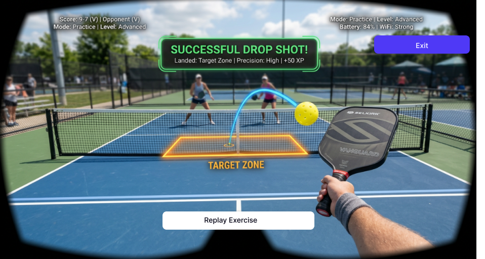
Pickleball is one of the fastest-growing sports in the world, but the gap between casual play and structured improvement remains wide. Players receive coaching in sessions and then go home with no way to revisit content, track progress, or continue training meaningfully between sessions.
Coaches face the same problem from the other side: they repeat the same instructions session after session because players have no reliable way to absorb and practise what they've been taught.
The design challenge: How do we bridge the gap between court coaching and independent practice — giving players the feedback, content, and tools to improve on their own terms?
This project used the full Stanford Design Thinking methodology — my most rigorous research process across all projects. I conducted in-depth interviews with elite coaches and competitive players, ran surveys across the pickleball community, and synthesised findings into personas and a validated problem statement before any design work began.
A four-step onboarding flow introduces the platform's core features before the player reaches the dashboard.
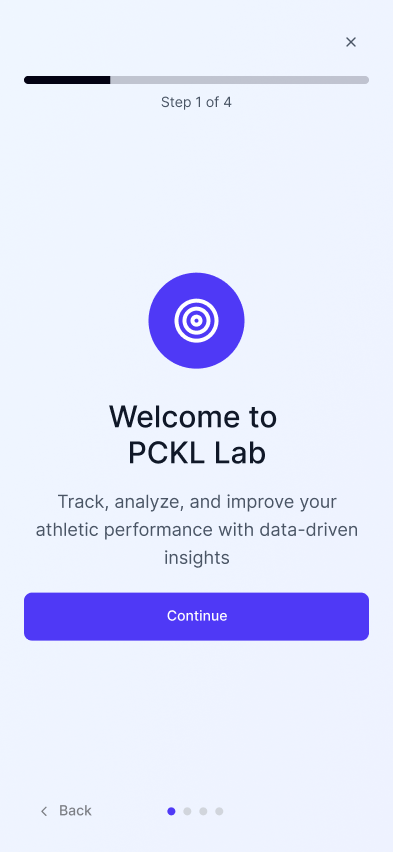
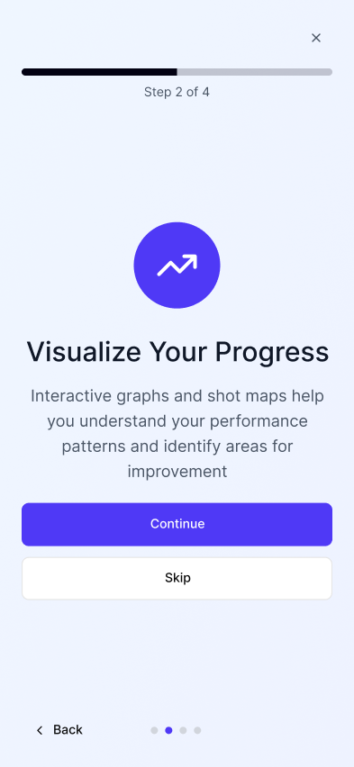
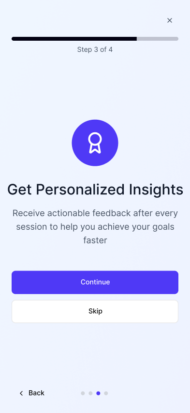
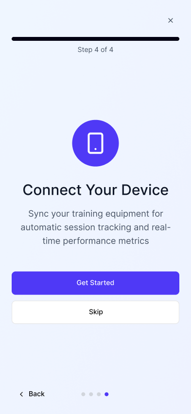
The home screen surfaces the metrics players care about most — accuracy, DUPR rating, progress and session count — alongside a direct route back into their current drill and monthly goal tracking.
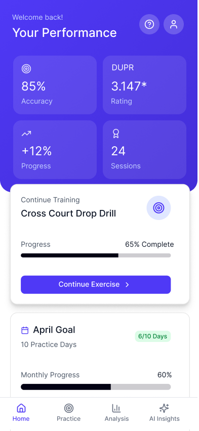
The drill library lets players filter by skill level and pick up exactly where they left off. Progress bars and completion states give a clear picture of where they are in their programme.
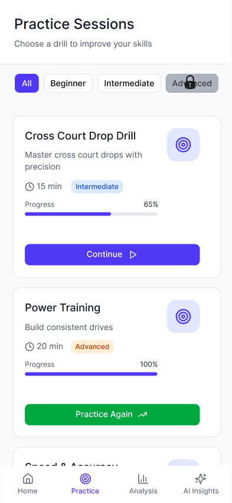
The app's signature feature: a first-person VR environment where players practise specific shots against real court backgrounds. Target zones highlight landing areas, real-time feedback appears on shot completion, and XP reinforces progress.
Three data views give players a complete picture of their game: shot placement mapping, racquet head speed, and success rate trend over time.
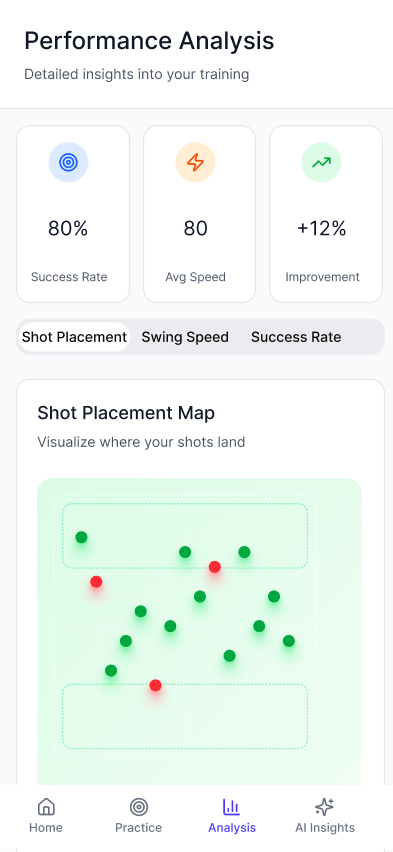
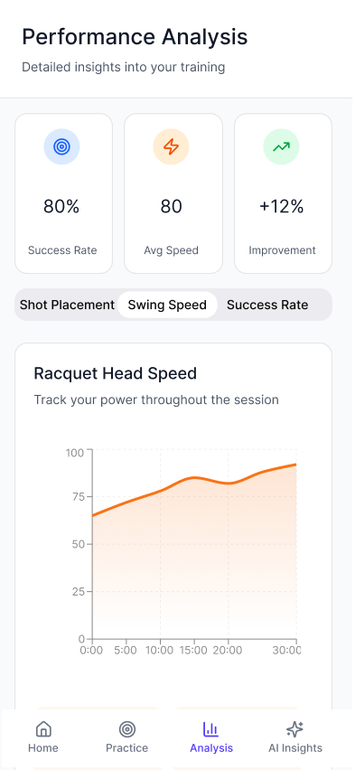
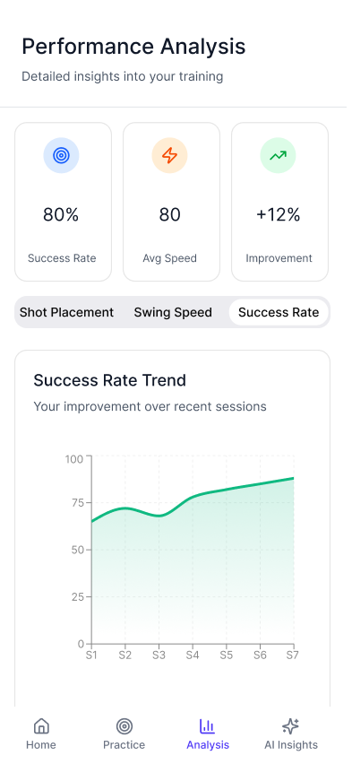
The AI Insights tab translates raw data into actionable recommendations — surfacing patterns like optimal practice times and consistency intervals, giving players a clear next step rather than just a number.
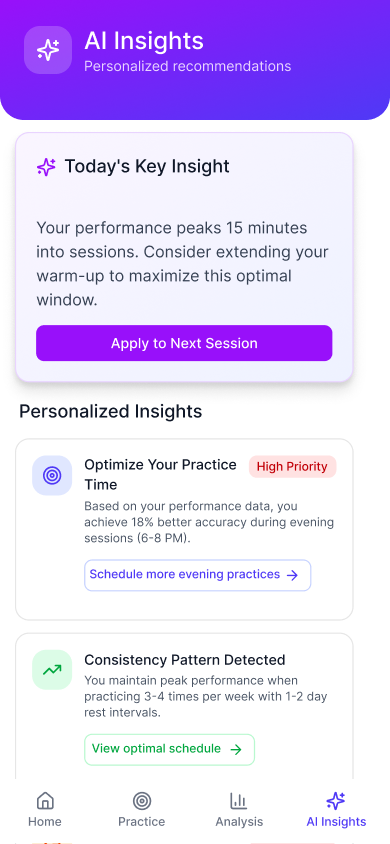
DUPR (Dynamic Universal Pickleball Rating) is the sport's official global rating system. Research showed it was the single number players cared most about. Connecting it to in-app performance data gave players a direct line between practice behaviour and competitive outcome.
Each VR drill corresponds directly to a coach-assigned exercise, so the technology serves the methodology rather than replacing it. Target zones and XP were kept minimal to avoid gamification overriding the learning purpose.
Research surfaced scepticism about AI coaching recommendations. The Insights tab addresses this by showing the data behind each recommendation and framing outputs as patterns rather than instructions. Players are given agency — the AI suggests, the player decides.
Assessors praised the depth of the research process and the coherence between research findings and design decisions. The VR integration was highlighted as a genuinely novel response to a validated user need.
PCKL Lab is the project where I most clearly saw the value of thorough upfront research. Because the problem was well defined before any design work began, decisions in the later stages felt grounded rather than speculative. Every feature can be traced back to something a coach or player told me.
If I were to continue this project, the next priority would be usability testing with actual pickleball players — particularly around the VR interaction model and whether shot feedback is legible under the cognitive load of an active training session.